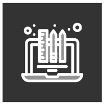

Hello!
I am Ana, a full stack web developer and graphic designer.
Welcome to my portfolio.

ABOUT ME
Passionate about creating dynamic websites, I am a junior web developer focusing on JavaScript, Angular, React, Node, and Express, constantly seeking new challenges and opportunities to grow in the web development world. With over 20 years of experience in graphic design and photo editing, I have a strong background in both visual and technical creation. My skills include developing web applications using technologies such as JavaScript, Angular, React, Node, Express, SQL, MongoDB, HTML5, and CSS3. I am proficient in using modern frameworks to create robust and scalable user interfaces.
Passionate about continuous learning and constant improvement, I always strive to stay up-to-date with the latest trends and best practices in web development. I am eager to collaborate in multidisciplinary teams and contribute my technical and creative skills to achieve project goals. Let's connect and explore new opportunities in the web development world together!
TECHNICAL SKILLS
PROFESSIONAL SKILLS
-

Graphic Design: Over 20 years of experience with Adobe Photoshop, Illustrator, and InDesign, specializing in image retouching and editing
-
Frontend Development: Creating web interfaces with HTML, CSS, and JavaScript, merging graphic design with web development.
-
Prototyping and UI/UX Design: Proficient in Figma for designing interfaces and interactive prototypes.
-
Full Stack Development: Experience with Node.js, Express, React, and Angular for developing complete web applications.
-
Version Control: Familiar with Git and GitHub for version management and project collaboration.
-
Attention to Detail: Meticulous in design and development, ensuring high quality and precision in every project.
-
Project Management: Skilled in planning, executing, and overseeing design and development projects.
-
Adaptability and Continuous Learning: Ability to quickly adapt to new technologies and trends in web development.
-
Communication and Collaboration: Excellent communication skills, facilitating effective collaboration with teams and clients.
PROJECTS


CONTACT
If you are looking for a web developer, graphic designer, or photo retoucher, contact me at anamgdesign@gmail.com or by filling out the form on this page. I am available to discuss your project and help bring it to life. I am also open to new job opportunities and collaborations. I look forward to working with you soon!